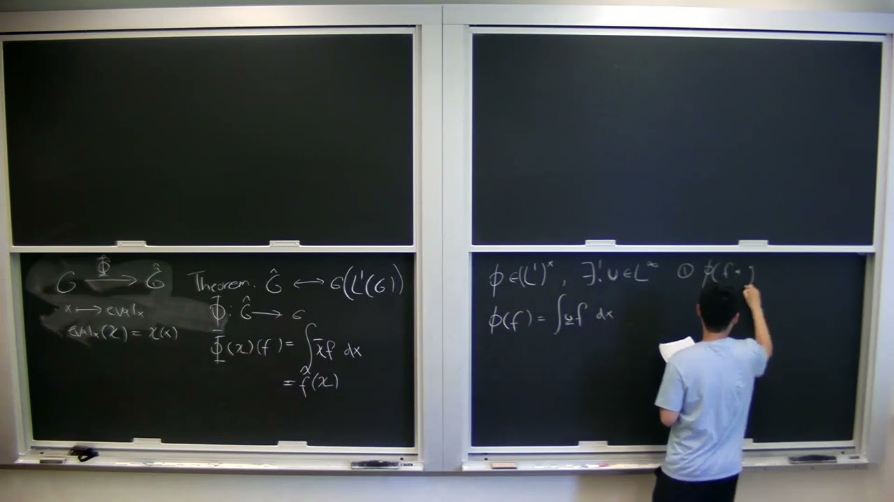

Publications
Google ScholarComputer vision

Systems & quantum computing
Applications of noisy quantum computing and quantum error mitigation to “adamantaneland”: a benchmarking study for quantum chemistry
Physical Chemistry Chemical Physics, 2024
Education

University of California, Merced
Ph.D. Student
Ph.D. Student
Sep. 2025 – Present

University of Toronto
B.Sc. in Computer Science
B.Sc. in Computer Science
Sep. 2020 – Apr. 2025
Visual Computing Group @ Harvard, Visiting Research Intern
Oct. 2024 – Dec. 2024
iQua Group @ University of Toronto, NSERC USRA Researcher
May 2024 – Aug. 2024
Middleware Systems Research Group @ University of Toronto, NSERC USRA Researcher
May 2022 – Dec. 2022
Work Experience

Zillow
Applied Scientist Intern
Applied Scientist Intern
Jun. 2026 – Aug. 2026

Noah's Ark Lab @ Huawei Canada
Research Intern
Research Intern
May 2023 – Apr. 2024
VecML Inc., Software Engineer Intern
Jan. 2025 – Jul. 2025
BIMStudio Inc., Software Engineer
Oct. 2020 – Aug. 2021
Talks, from another life
In another life, and with substantially more mathematical talent, I might have pursued a Ph.D. in pure mathematics. I did dabble during my third year. One result was this required talk from a course. There are quite a few gaps in the proof (GPT-6 Astra’s thoughts). I suppose I tried my best…

Unveiling the Pontryagin Duality Theorem: A Proof in 4 Steps
Fields Institute · Operator Algebra Seminar
The K0 group for C*-algebras
Waterloo Pure Math Club · SAMS